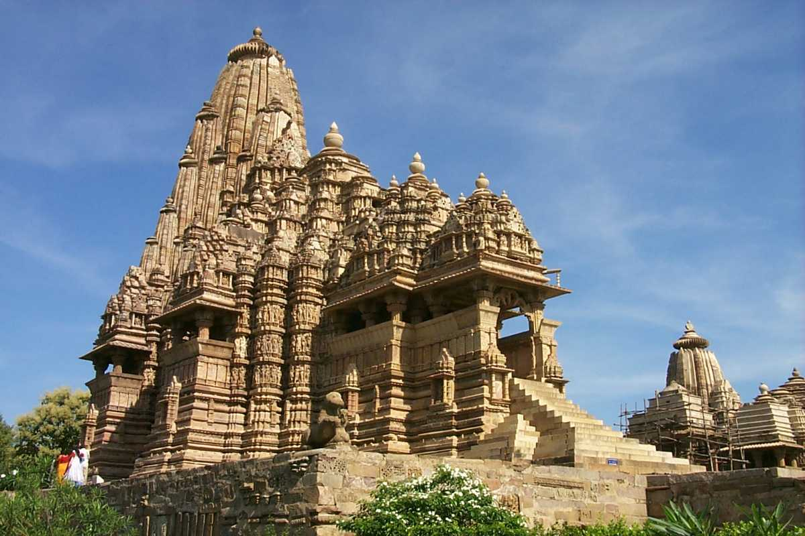

Welcome to Madhya Pradesh!

Madhya Pradesh, located in central India, is known for its rich history, architectural marvels, diverse wildlife,
and cultural heritage. Often referred to as the "Heart of India," Madhya Pradesh offers a fascinating blend of
ancient temples, magnificent forts, wildlife sanctuaries, and traditional arts.
Historical and Architectural Marvels: Madhya Pradesh is home to UNESCO World Heritage Sites such as the
Khajuraho Group of Monuments, renowned for their intricately carved temples depicting various facets of life. The
temples of Khajuraho are famous for their erotic sculptures and architectural splendor. Other architectural
marvels include the Sanchi Stupa, a Buddhist monument dating back to the Mauryan period, and the majestic Gwalior
Fort, showcasing a blend of Hindu and Mughal architectural styles.
Cultural Diversity: Madhya Pradesh's cultural fabric is enriched by its tribal communities, each with its own
distinct traditions and art forms. Tribal festivals such as Bhagoria Haat, celebrating the spirit of love and
courtship, and the Gond Art Festival, showcasing tribal art and culture, offer insights into the state's cultural
diversity. The folk music and dance forms of Madhya Pradesh, including Tansen Music Festival in Gwalior and
Kalidas Samaroh in Ujjain, highlight its rich cultural heritage.
Wildlife and Natural Beauty: Madhya Pradesh is a haven for wildlife enthusiasts, with national parks and
sanctuaries like Kanha, Bandhavgarh, and Pench offering opportunities to spot tigers, leopards, and other rare
species. The lush forests of Pachmarhi, the only hill station in the state, provide scenic vistas, waterfalls, and
trekking trails amidst tranquil surroundings. The Narmada River, considered sacred, flows through the Marble Rocks
of Bhedaghat, offering boat rides and stunning views of the canyon.
Cuisine: Madhya Pradesh's cuisine reflects its diverse cultural influences and agricultural abundance.
Traditional dishes include Bhutte Ka Kees (grated corn cooked with milk and spices), Poha-Jalebi, and Dal Bafla, a
wheat dumpling served with dal and ghee. Sweets like Gajar Ka Halwa and Malpua are popular during festivals and
special occasions, showcasing the state's culinary richness.
Handicrafts and Textiles: Madhya Pradesh is known for its exquisite handicrafts such as Chanderi and
Maheshwari sarees, known for their fine weaving and delicate designs. The state's traditional crafts also include
Bagh Print, a hand block printing technique using natural dyes, and Dhokra metal craft, which involves casting
intricate figurines and artifacts using the lost wax technique. These handicrafts contribute to the state's
cultural heritage and rural economy.
Festivals and Cultural Events: Madhya Pradesh celebrates numerous festivals with great fervor, reflecting its
cultural vibrancy and religious diversity. Festivals like Diwali, Holi, and Navratri are celebrated with
traditional rituals, music, dance, and community gatherings. The Tansen Music Festival in Gwalior, dedicated to
the legendary musician Tansen, attracts classical music enthusiasts from around the world, showcasing Madhya
Pradesh's cultural legacy.
In conclusion, Madhya Pradesh's cultural heritage, historical landmarks, wildlife sanctuaries, and culinary
delights make it a captivating destination for travelers seeking to explore India's heartland. Its blend of
ancient traditions, architectural splendor, and natural beauty offers a glimpse into the diverse cultural tapestry
of central India.